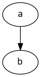

Drawings using graphviz¶
We support using the Sphinx graphviz extension for creating simple graphs and line drawings using the dot language. The advantage of using graphviz for drawings is that source for a drawing is a text file that can be edited and maintained in the repo along with the documentation.
These source .dot files are generally kept separate from the document itself,
and included by using a graphviz directive:
.. graphviz:: images/boot-flow.dot
:name: boot-flow-example
:align: center
:caption: ACRN Hypervisor Boot Flow
Where the boot-flow.dot file contains the drawing commands:
digraph G {
rankdir=LR;
bgcolor="transparent";
UEFI -> "acrn.efi" -> "OS\nBootloader" ->
"SOS\nKernel" -> "ACRN\nDevice Model" -> "Virtual\nBootloader";
}
and the generated output would appear as this:

Figure 73 ACRN Hypervisor Boot Flow¶
Let’s look at some more examples and then we’ll get into more details about the dot language and drawing options.
Simple directed graph¶
For simple drawings with shapes and lines, you can put the graphviz commands in the content block for the directive. For example for a simple directed graph (digraph) with two nodes connected by an arrow, you can write:
.. graphviz::
digraph {
"a" -> "b"
}
and get this:
You can change the graph layout (from top-to-bottom to left-to-right), node shapes (rectangles, circles, house, star, etc.), style (filled, rounded), and colors, along with the text displayed in the node, and the resulting image placement on the page (centered):
digraph {
bgcolor="transparent"; rankdir=LR;
{ a [shape=circle height="1" style=filled color=AntiqueWhite
label="Circle\nLabel"]
b [shape=box height="1" width="1" style="rounded,filled"
color="#F080F0" label="Square\nLabel"]
}
a -> b
}
You can use the standard HTML color names or use RGB values for colors, as shown.
Adding edge labels¶
Here’s an example of a drawing with labels on the edges (arrows) between nodes. We also show how to change the default attributes for all nodes and edges within this graph:
digraph {
bgcolor=transparent; rankdir=LR;
node [shape="rectangle" style="filled" color="lightblue"]
edge [fontsize="12" fontcolor="grey"]
"acrnprobe" -> "telemetrics-client" [label="crashlog\npath"]
"telemetrics-client" -> "backend" [label="log\ncontent"]
}
Tables¶
For nodes with a record shape attribute, the text of the label is
presented in a table format: a vertical bar | starts a new row or
column and curly braces { ... } specify a new row (if you’re in a
column) or a new column (if you’re in a row). For example:
digraph {
a [shape=record label="left | {above|middle|below} | <f1>right"]
b [shape=record label="{row1\l|row2\r|{row3\nleft|<f2>row3\nright}|row4}"]
}
Note that you can also specify the horizontal alignment of text using escape
sequences \n, \l and \r that divide the label into lines, centered,
left-justified, and right-justified, respectively.
Finite-State Machine¶
Here’s an example of using graphviz for defining a finite-state machine for pumping gas:
digraph gaspump {
rankdir=LR;
node [shape = circle;];
edge [color = grey; fontsize=10];
S0 -> S1 [ label = "Lift Nozzle" ]
S1 -> S0 [ label = "Replace Nozzle" ]
S1 -> S2 [ label = "Authorize Pump" ]
S2 -> S0 [ label = "Replace Nozzle" ]
S2 -> S3 [ label = "Pull Trigger" ]
S3 -> S2 [ label = "Release Trigger" ]
}